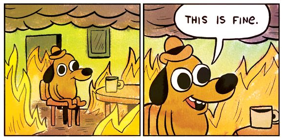

ProX
pro·tect, verb: to keep from loss
Protection for your tokenized stocks while the market is asleep.
Rizwan Moulvi
TOKEN2049 Origins, Singapore 2026
Tokenized stocks trade 24/7.
Wall Street does not.
The market sleeps.
The price does not.
Wall Street at 4:00 PM
Your NVDA at 2 AM on a Saturday
65
hours. Every weekend.
From Friday's close at 4:00 PM to Monday's open at 9:30 AM, New York time.
You, holding it all weekend.

Keep the stock.
Sit out the gap.
That is ProX. A third button.
The hedge cancels the fall.
Market closed
Friday close
Monday open
Stock with ProX
Stock on its own
Three choices. That is the whole app.
1
Which stock
Any stock you hold on Backpack.
2
How much
A quarter, half, most, or all of it.
3
How long
After hours, four hours, or the weekend.

Wait, my stock is the collateral?
Always has been.
Nothing is sold. No extra cash goes in.
A hedge you babysit is a second job.
Leave it on too long and it starts costing you the upside.

Market shuts. Price drops.
You opened a hedge.
You must wake up at 9:30 to close it.
It closes itself.
A Chainlink oracle watches the price gap after the market opens. When it has settled, ProX buys the short back.
Then the receipt is stamped onto Solana.
$2.40
of real NVDA. Really hedged.
0.01 shares on Backpack. A real short opened against it and bought back. Real orders, real money.
Two ways ProX earns.
A subscription
$10 a month for protection that runs on a schedule, hands off.
A flat fee per protection
$1 each time a hedge opens, with no plan needed.
Tokenized stocks today
$3.2B
More than tripled since March. Over 750,000 holders.
$349B by 2030 in Binance Research's base case.
Sources: RWA.xyz, 3 October 2026 and July 2026. Binance Research, "The RWA Activation Era", September 2026. Prices are our launch plan.
Try it.
Keep the stock. Sit out the gap.
[site link]
[QR code]
Goes here once the site has a public link